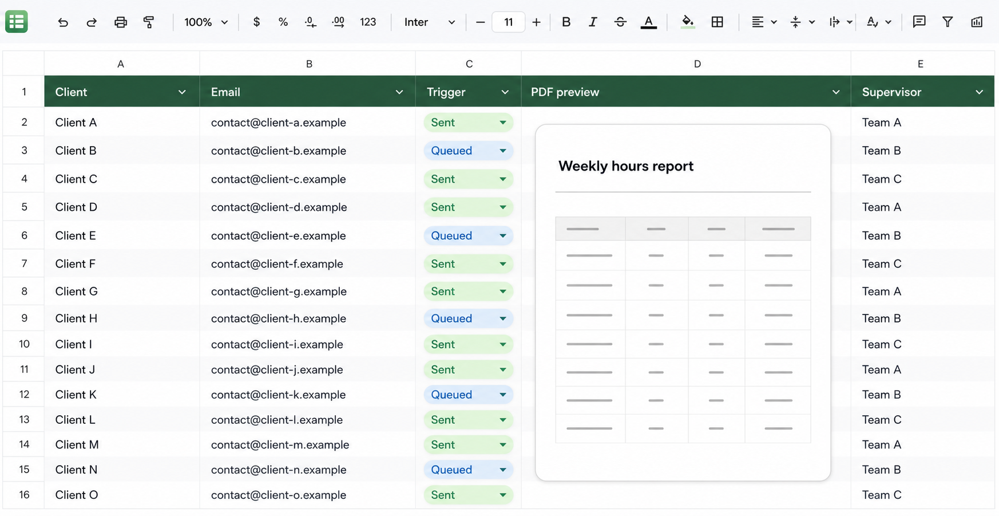
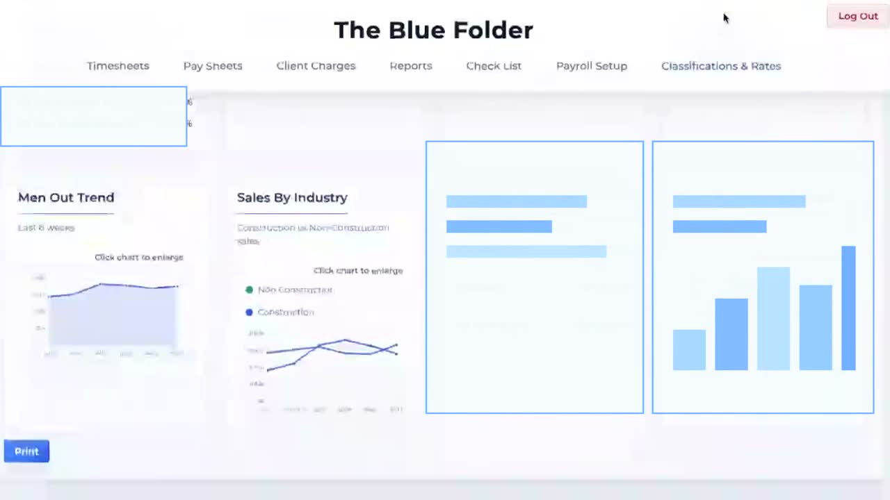

Case Example
Building a Labour Hire Management System: From Timesheets to Workforce Management and Payroll Preparation for 80+ Employees.
Step 1
Worker and client details create the right placement.
Worker registrations and client orders are matched to create the correct Blue Folder placement. Workers can then submit their hours through a native web link—no app or password required.
Step 2
Submitted hours become approved payroll and invoice data.
We collect and review the submitted hours, then the system creates a PDF report of each worker’s hours for the relevant client. Each report is sent to the correct client for approval. Once approved, the timesheet data transfers to the Blue Folder, which processes it into a payroll file and sales data for generating invoices.
One continuous data flow

See the Google SheetAutomated code powers the actions.
Watch the Blue FolderAccelerated, privacy-safe walkthrough.One timesheet stream, two business outputs
PDF Generator & Batch Emailer
×Code turns the review queue into sent PDF reports.
</>Automation codeGenerates PDFs and sends emails.
One spreadsheet interface is backed by automation that creates client-specific PDF reports and sends each one to the correct recipient. All displayed names and addresses are aliases.
The Blue Folder
×From approved timesheets to usable business data.
This short view focuses only on the Blue Folder reports workspace. Sensitive client, worker and financial details are removed.